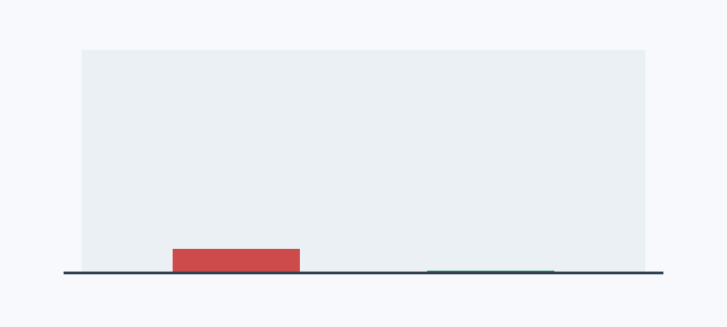
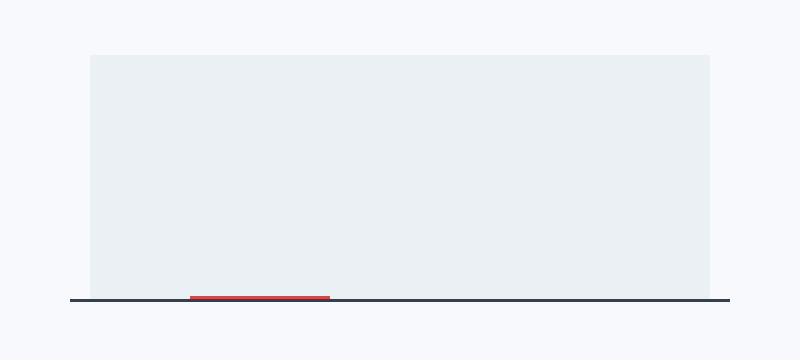
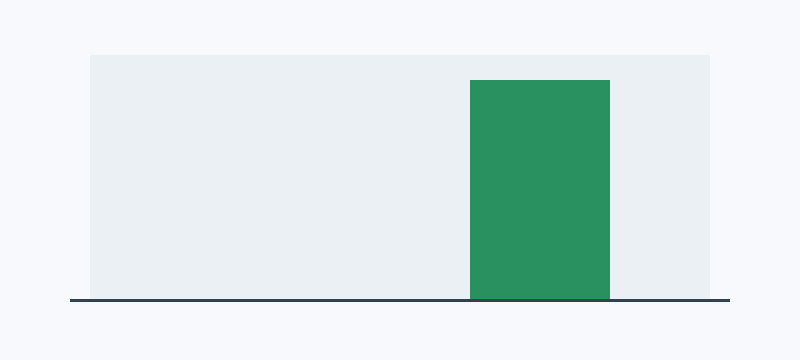
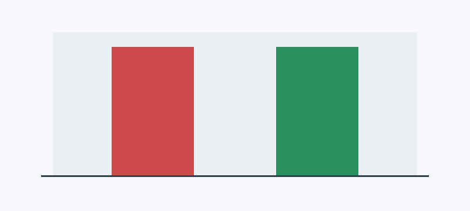

| Metric | Baseline | Current | Target | Status |
|---|---|---|---|---|
| Critical patch compliance | 0% | 100% | 95% | On target |
| Critical remediation time | 12 days | 1 days | 7 days | On target |
| Open critical/high findings | 2 | 0 | 0 | On target |
| Monitoring coverage | 0% | 100% | 95% | On target |
| Control verification pass rate | 0% | 100% | 100% | On target |
| Control ownership coverage | 100% | 100% | 100% | On target |




